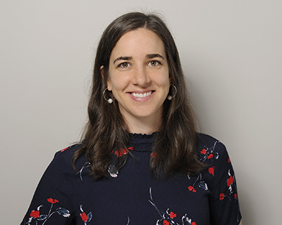
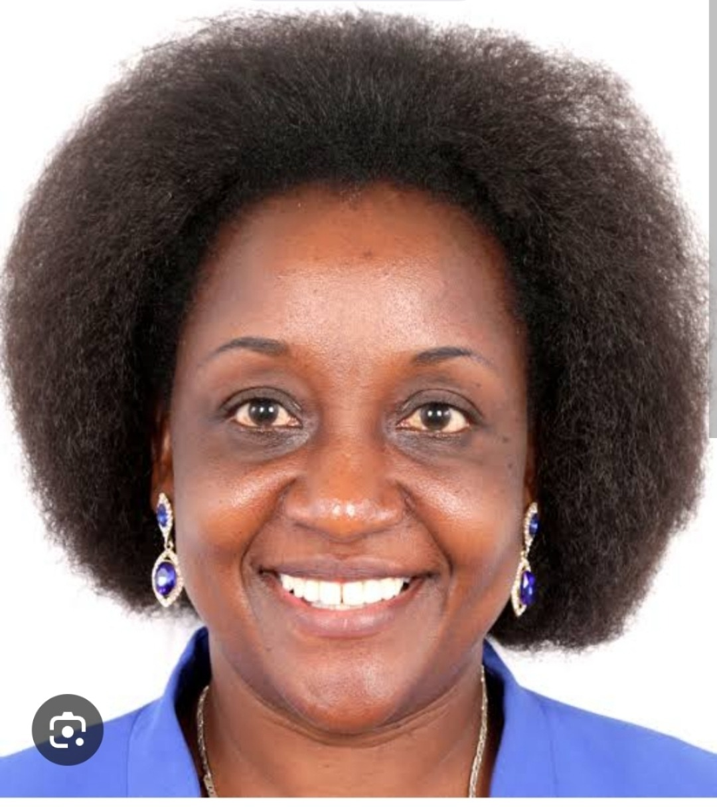
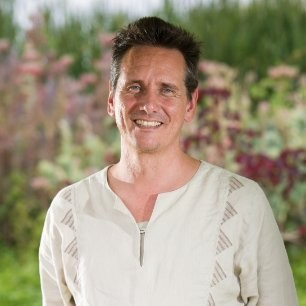
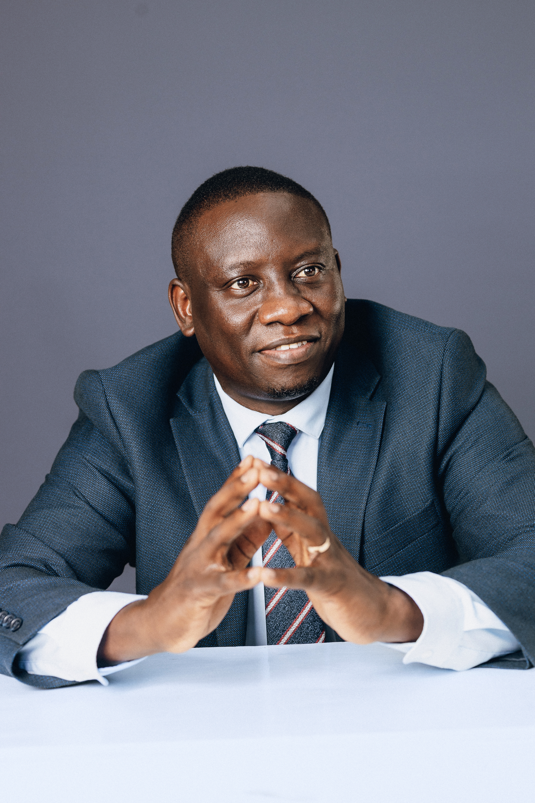
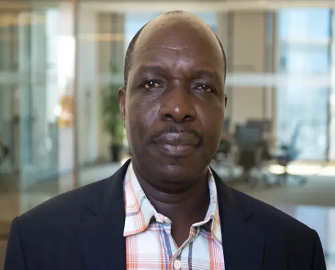
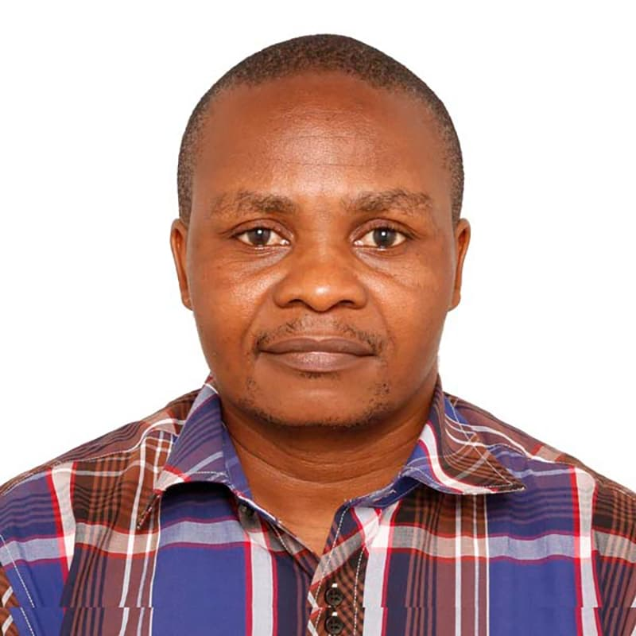
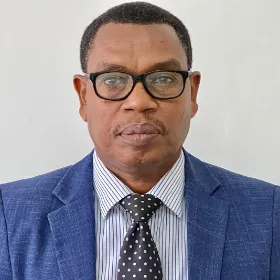

Leadership


Bet Caeyers
Co-lead · Chr. Michelsen Institute
Bet Caeyers is Research Director of the Thrive research program and Principal Investigator for Thrive Tanzania, with extensive experience living and working in Sub-Saharan Africa. Her research focuses on scaling Early Childhood Development through rigorous measurement and cost-effective program design, currently centered on Kizazi Kijacho, a major longitudinal ECD study in Tanzania. She holds a PhD in Economics from Oxford and previously worked as a Senior Research Economist at the IFS, Global Impact Evaluation Advisor at Oxfam GB, and Research Project Manager at EDI Global.
Ingvild Almås
Co-lead · University of Zurich; Stockholm University; LRF Center for Economics of Breastfeeding
Ingvild Almås is a Professor of Economics, UZH, previously a Professor at the Institute for International Economic Studies (IIES), Stockholm University (SU). She is also a Principal Investigator at FAIR, Norwegian School of Economics and currently a part time professor at IIES. Almås also serves on the Committee of Monetary Policy and Financial Stability at the Norwegian Central Bank. Her research focuses on gaining a better understanding of economic inequalities. She has worked on the measurement of income inequality, its drivers, and the perceptions about inequality that people hold. She has also been working extensively on the decision making in households, gender equality, and child and adolescents development.
Tillmann Eymess
Project Manager · University of Zurich; LRF Center for Economics of Breastfeeding
Tillmann Eymess is a Senior Researcher in the Department of Economics at the University of Zurich. His research interests are in development, behavioral, and environmental economics. As an applied microeconomist, he employs behavioral methods through RCTs, field experiments, as well as online surveys and survey experiments with populations from around the world.
Collaborators

Bianca Yue
Yale University
Bianca Yue
Yale University
Bio to be supplied.

Charlotte Ringdal
Chr. Michelsen Institute; Development Learning Lab (co-director); FAIR (NHH)
Charlotte Ringdal
Chr. Michelsen Institute; Development Learning Lab (co-director); FAIR (NHH)
Her research focuses on family economics — marital conflict, intimate partner violence, violence against children (including FGM), and intra-household resource allocation.

Costas Meghir
Yale University; Institute for Fiscal Studies (IFS)
Costas Meghir
Yale University; Institute for Fiscal Studies (IFS)
Douglas A. Warner III Professor of Economics at Yale University. His research spans human capital and early childhood development (ECD), informal labor markets, labor supply and welfare programs, the economics of the family, including marriage markets and intrahousehold allocation of resources.

Deogardius Medardi
Oxford Policy Management
Deogardius Medardi
Oxford Policy Management
Deo Medardi is a Tanzania-based consultant in OPM's education practice, specialising in the management and delivery of education projects, with a focus on pre-primary, primary and secondary school education. He has over 12 years' multi-sectoral experience in research and evaluation planning, project management, training design, workshops, government engagement and qualitative interviews, and brings a multi-disciplinary approach to his work through his experience in the human development field, particularly on ECD, education, nutrition, and social protection projects.

Devon Spika
University of Zurich
Devon Spika
University of Zurich
Bio to be supplied.

Ester Elisaria
Deputy Principal Investigator, Tanzania; Ifakara Health Institute
Ester Elisaria
Deputy Principal Investigator, Tanzania; Ifakara Health Institute
Dr. Ester Elisaria has worked extensively in the area of Nutrition, Public Health and Epidemiology program implementation. She has a solid passion on maternal and child health. Dr. Ester has a great understanding of the health system in Tanzania, having spent seven years working with Tanzania Food and Nutrition Centre as a Nutritionist. She gained a great understanding of working with international organisations, including UNICEF country office, AMREF international and Curtin University in Australia.

Gaston Fernandez
Luxembourg Institute of Socio-Economic Research (LISER)
Gaston Fernandez
Luxembourg Institute of Socio-Economic Research (LISER)
Bio to be supplied.

Georgina Rawle
Public Sector Finance Lead, Tanzania; Oxford Policy Management
Georgina Rawle
Public Sector Finance Lead, Tanzania; Oxford Policy Management
She is an economist with more than 20 years' experience of working on projects involving public finance for children, social sector planning and monitoring and evaluation. She has led multiple long-term projects in Tanzania involving large-scale field research, and is especially familiar with the education sector, including early learning provision. Georgina leads the costing study.

Honorati Masanja
Ifakara Health Institute
Honorati Masanja
Ifakara Health Institute
Dr. Honorati Masanja is the former Chief Executive Director of the Ifakara Health Institute, having served in the position from 2016 to 2026. A statistician and epidemiologist by training, he holds a PhD in Epidemiology and has extensive experience in data management, clinical trials, research design, and the design and evaluation of large-scale maternal and child health programmes.

Kate Gooding
Oxford Policy Management (OPM)
Kate Gooding
Oxford Policy Management (OPM)
Kate is a research and evaluation specialist in the health team's monitoring and evaluation hub. She has broad global health and international development experience, and particular expertise in qualitative methods and theory-driven evaluation.

Laura van der Erve
Oxford Policy Management (OPM)
Laura van der Erve
Oxford Policy Management (OPM)
Laura brings extensive experience in (quasi-)experimental methods, the analysis of survey and large administrative data, and effectively communicating academic research findings to policymakers. She leads the quantitative process evaluation of Kizazi Kijacho and supports the ECD Centre models and pre-and-postnatal conditions projects in Tanzania, Sierra Leone and Bangladesh. Dr. Van Der Erve also acts as the Country Lead for Sierra Leone.

Laurel Krovetz
Cornell University
Laurel Krovetz
Cornell University
Bio to be supplied.

Ludovico Carraro
Independent Consultant
Ludovico Carraro
Independent Consultant
Dr Ludovico Carraro is an independent consultant with more than 25 years of experience in development and specialises in welfare/distributional analysis and social protection. He has provided technical assistance and advice in the design and implementation of many social protection programmes in Asia, Africa and Eastern Europe. Ludovico also worked with many statistical offices in the measurement of poverty, generating poverty profiles and looking at social exclusion and overlapping deprivations.

Macklina Mhagama
Affiliation to be confirmed
Macklina Mhagama
Affiliation to be confirmed
Bio to be supplied.

Marc Bornstein
NICHD/NIH; King's College London; York University
Marc Bornstein
NICHD/NIH; King's College London; York University
Marc H. Bornstein is Senior Investigator and Head of Child and Family Research at NICHD, with past faculty positions at Princeton and NYU and appointments at institutions across more than a dozen countries. He is President-elect of the SRCD, Editor Emeritus of Child Development, and founding Editor of Parenting: Science and Practice, and consults widely for governments, foundations, and organizations including UNICEF. His extensive published work spans developmental, comparative, and cultural science, as well as neuroscience, pediatrics, and aesthetics.

Matteo Santangelo Ravà
Queen Rania Foundation; Aix Marseille School of Economics
Matteo Santangelo Ravà
Queen Rania Foundation; Aix Marseille School of Economics
Matteo is a behavioral development economist with a decade of experience in public policy research and evaluation across high- and low-income settings, focused on education, health, and child protection — particularly early childhood development and behavioral science. Currently at the Queen Rania Foundation and pursuing a PhD in Economics at Aix-Marseille School of Economics, researching how behavioral insights can strengthen caregiver engagement and early learning outcomes. A former ODI Fellow and Health Economist at Zanzibar's Ministry of Health, with field experience leading research and program implementation in Zanzibar, Côte d'Ivoire, Jordan, and the Philippines.

Orazio Attanasio
Yale University; NBER; Institute for Fiscal Studies; J-PAL; ESRC Centre
Orazio Attanasio
Yale University; NBER; Institute for Fiscal Studies; J-PAL; ESRC Centre
Orazio Attanasio is the Cowles Professor of Economics at Yale University. His research spans household consumption and risk-sharing, early childhood development, and the evaluation of policy interventions in developing countries, including major conditional cash transfer and early-years programs across Mexico, Colombia, India, and Ghana.

Pallavi Prabhakar
Stockholm School of Economics
Pallavi Prabhakar
Stockholm School of Economics
Pallavi completed her PhD in Economics at FAIR, Norwegian School of Economics (NHH). She studies how economic frictions at the government and household level shape the effectiveness of public programmes.

Pamela Jervis
University of Chile; Institute for Fiscal Studies
Pamela Jervis
University of Chile; Institute for Fiscal Studies
Pamela earned her PhD in Economics at UCL (2016) and was a postdoc at IFS's Centre for the Evaluation of Development Policies (EDePo). Her work covers household behaviour, human capital accumulation, and policy evaluation.

Sadashiv Nayanpally
Oxford Policy Management (OPM)
Sadashiv Nayanpally
Oxford Policy Management (OPM)
Sadashiv Nayanpally is a consultant at Oxford Policy Management (OPM). He has over 10 years' experience in education and international development. He has extensive experience in providing technical assistance in education sector financing and planning in India and Tanzania. He is also experienced in using quantitative methods and participatory action research. Sadashiv will lead ECD finance and systems, and also supports the costing study design, analysis and reporting.

Theresa Betancourt
Boston College School of Social Work
Theresa Betancourt
Boston College School of Social Work
Theresa S. Betancourt is the Salem Professor in Global Practice at the Boston College School of Social Work and Director of the Research Program on Children and Adversity, focusing on resilience, mental health, and development in children facing conflict, poverty, and displacement. She leads several major longitudinal and intervention studies, including a long-running study of war-affected youth in Sierra Leone that produced the Youth Readiness Intervention, and Sugira Muryango, a father-engaged early childhood home-visiting program in Rwanda now scaling with support from the LEGO Foundation. Her work has been published widely in leading journals and profiled in outlets including the New Yorker, National Geographic, and CNN.
Scientific Advisory Board

Bruno Ghumpi
National ECD coordinator · TECDEN
Bruno Ghumpi
National ECD coordinator · TECDEN
Bio to be supplied.

Craig Ferla
CEO, Children in Crossfire (CiC)
Craig Ferla
CEO, Children in Crossfire (CiC)
Bio to be supplied.

Dr. Bundala
Director for Reproductive, Maternal, Neonatal, Child and Adolescent Health · Ministry of Health
Dr. Bundala
Director for Reproductive, Maternal, Neonatal, Child and Adolescent Health · Ministry of Health
Bio to be supplied.

Dr. Ntuli Kapologwe
Director of Health, Social Welfare and Nutrition Services · PoRALG
Dr. Ntuli Kapologwe
Director of Health, Social Welfare and Nutrition Services · PoRALG
Dr. Ntuli Angyelile Kapologwe is a Tanzanian public health leader, researcher, and strategic health systems expert with over 20 years of professional experience, including 15 years in top-level leadership. He currently serves as the Director General of the East, Central and Southern Africa Health Community (ECSA-HC).

Fortidas Bakuza
Assistant Professor / Deputy Head of Programs · Aga Khan University IED East Africa
Fortidas Bakuza
Assistant Professor / Deputy Head of Programs · Aga Khan University IED East Africa
Dr. Fortidas Bakuza is Assistant Professor and Deputy Head of Programmes at the Aga Khan University's Institute for Educational Development, East Africa, where he has taught since 2014, specializing in early childhood education, teacher education, and education leadership and policy.

Grace O. Mwangwa
Head of Gender and Gender Based Violence, Gender and Development · Ministry of Health
Grace O. Mwangwa
Head of Gender and Gender Based Violence, Gender and Development · Ministry of Health
Bio to be supplied.

Lauren Galvin
Senior Technical Advisor, Health and Gender · Global Communities
Lauren Galvin
Senior Technical Advisor, Health and Gender · Global Communities
Lauren Galvin is a senior technical adviser for health and gender at Global Communities. She has 10 years of experience in research, program design, implementation, and evaluation of reproductive, maternal, and child health, nutrition, parenting, and father-engagement programs. She recently co-designed and managed the Tanzania EFFECTS randomized trial measuring impact of engaging fathers and bundling nutrition and parenting interventions on child diets, growth, development, and gender equality. Galvin has a master's degree in Public Health from Columbia University and a bachelor's degree in Philosophy from Smith College. She works in South Asia, Central and East Africa, and Latin America.
Mwajuma Rwebangila
Executive Director · TECDEN
Mwajuma Rwebangila
Executive Director · TECDEN
Mwajuma Davina Rwebangila, M.A. in Development Studies, has served as the Executive Director of the Tanzania Early Childhood Development Network (TECDEN) since January 2021. Over the past 18 years, she has contributed to various programmes, including HIV/AIDS, youth and women empowerment, accountability, and early childhood development.

Richard Shukia
Lecturer in Child Psychology, Early Childhood Education, and Early Literacy and Numeracy Development · University of Dar es Salaam
Richard Shukia
Lecturer in Child Psychology, Early Childhood Education, and Early Literacy and Numeracy Development · University of Dar es Salaam
Richard Yesaya Shukia is a lecturer, consultant, and researcher at the University of Dar es Salaam, specializing in child psychology, early childhood development, and curriculum and teacher training reform. With over 15 years of experience, he has worked extensively with the Tanzanian government, currently serving as a national technical expert for MoEST and PO-RALG on curriculum reform and teacher professional development, and as lead researcher evaluating Teacher CPD roll-outs across 26 pilot districts. He was also part of the Tanzanian team on the RISE education systems research project from 2016 to 2022.

Sebastian Kitiku
Director of Child Development · Ministry of Community Development
Sebastian Kitiku
Director of Child Development · Ministry of Community Development
Bio to be supplied.

Sylvia Mekhu
Tanzania National Bureau of Statistics
Sylvia Mekhu
Tanzania National Bureau of Statistics
Sylvia Mekhu is a senior Tanzanian statistician and leader who specializes in demographic data collection, social survey methodology, and national welfare metrics. She has spent a significant portion of her career serving the National Bureau of Statistics (NBS) Tanzania, the government branch mandated to provide all official national statistics.
Youdi Schipper
Senior Fellow, Amsterdam Institute for Global Health and Development; Manager, KiuFunza Evaluation, Twaweza · Amsterdam Institute for Global Health and Development; Twaweza East Africa
Youdi Schipper
Senior Fellow, Amsterdam Institute for Global Health and Development; Manager, KiuFunza Evaluation, Twaweza · Amsterdam Institute for Global Health and Development; Twaweza East Africa
Dr. Youdi Schipper is a senior development economist and project manager specializing in the impact evaluation of development interventions. The focus of his work is on quantitative impact evaluations of development interventions, with a particular emphasis on education and agriculture in Africa. He is a senior expert in quantitative evaluation methods and evaluation management, including the implementation of household surveys.

Zuhura Mdungi
Development Communication Specialist · TASAF
Zuhura Mdungi
Development Communication Specialist · TASAF
Bio to be supplied.